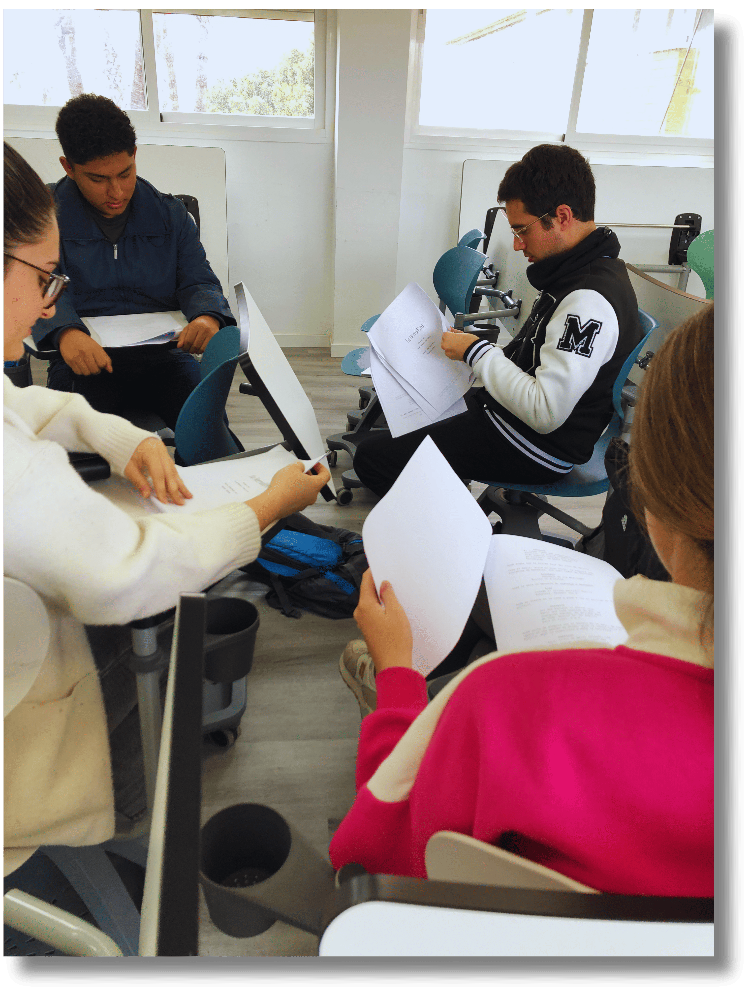

Antes de la acción, la preparación
 Antes de que las cámaras empiecen a grabar, llega un momento clave en cualquier producción: los ensayos. En La Herradura, fueron el espacio donde los alumnos pudieron experimentar, equivocarse, repetir y mejorar hasta encontrar la mejor forma de dar vida a sus personajes. Ensayar no solo significó aprenderse los diálogos, sino también trabajar la expresión corporal, los gestos y la coordinación con el resto del equipo.
Antes de que las cámaras empiecen a grabar, llega un momento clave en cualquier producción: los ensayos. En La Herradura, fueron el espacio donde los alumnos pudieron experimentar, equivocarse, repetir y mejorar hasta encontrar la mejor forma de dar vida a sus personajes. Ensayar no solo significó aprenderse los diálogos, sino también trabajar la expresión corporal, los gestos y la coordinación con el resto del equipo.
Estos encuentros previos al rodaje nos permitieron ganar confianza y seguridad, además de fortalecer el trabajo en grupo. Gracias a este proceso, las escenas llegaron al rodaje con más fluidez y naturalidad, convirtiéndose en una experiencia de aprendizaje tan importante como divertida.
EL ENSAYO: ¿INSPIRACIÓN O DISCIPLINA?


